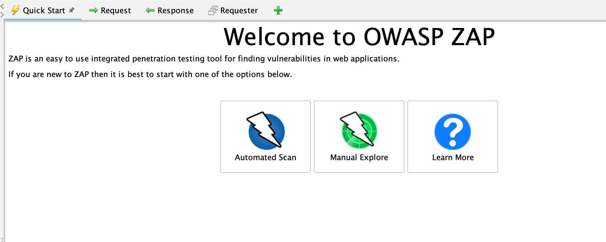
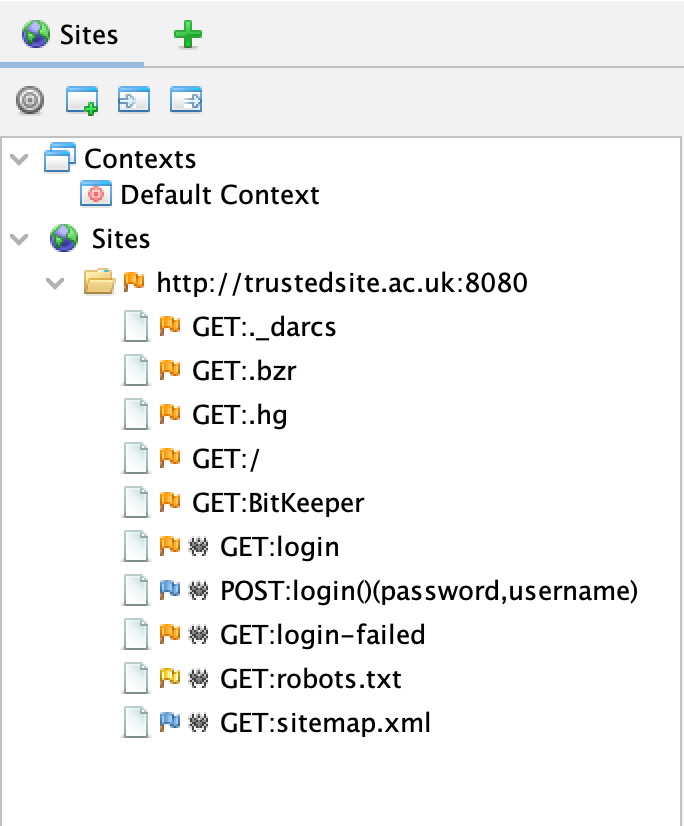
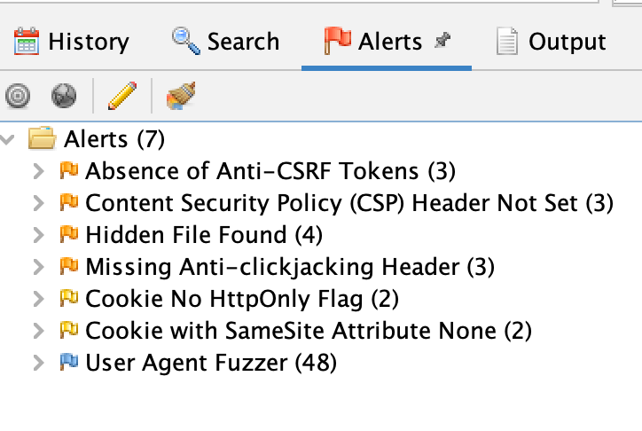
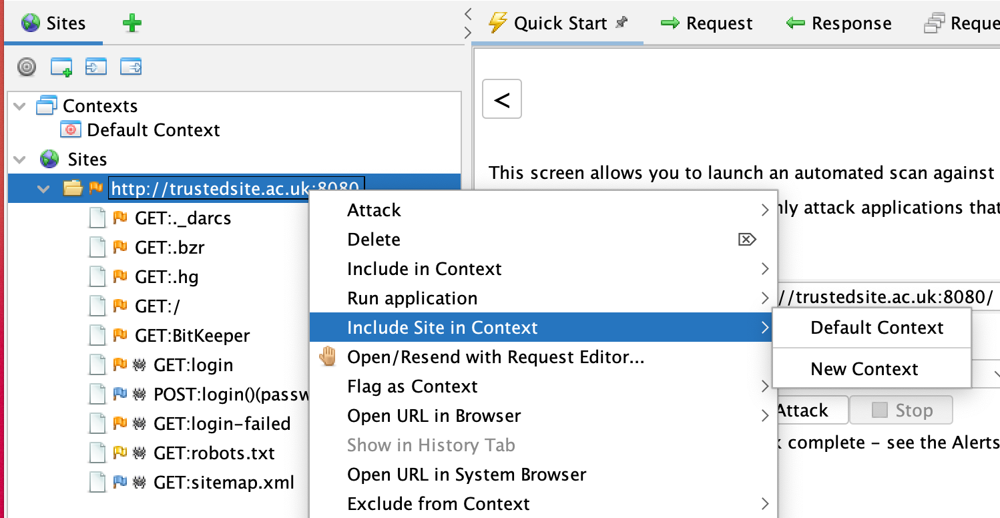
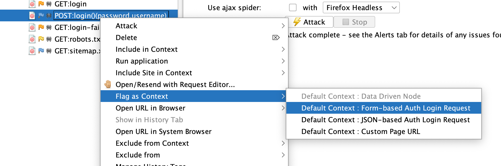
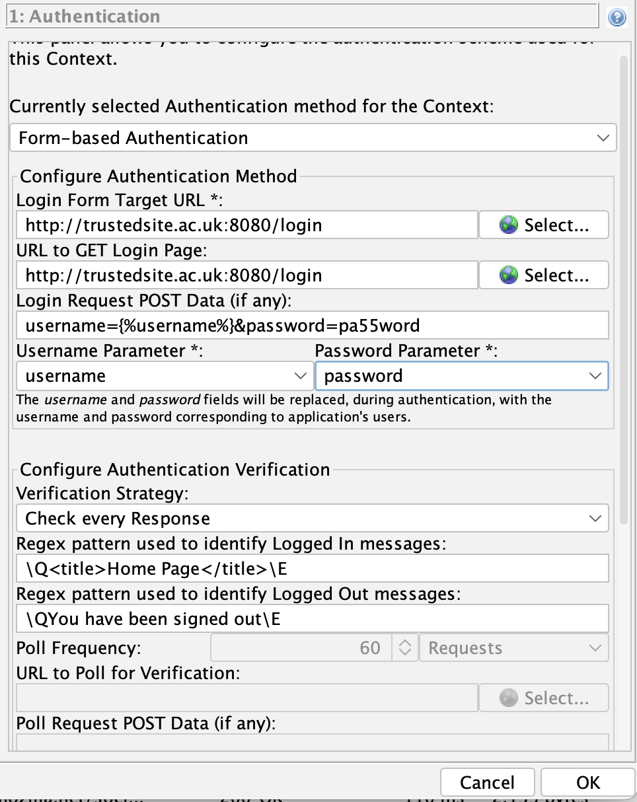
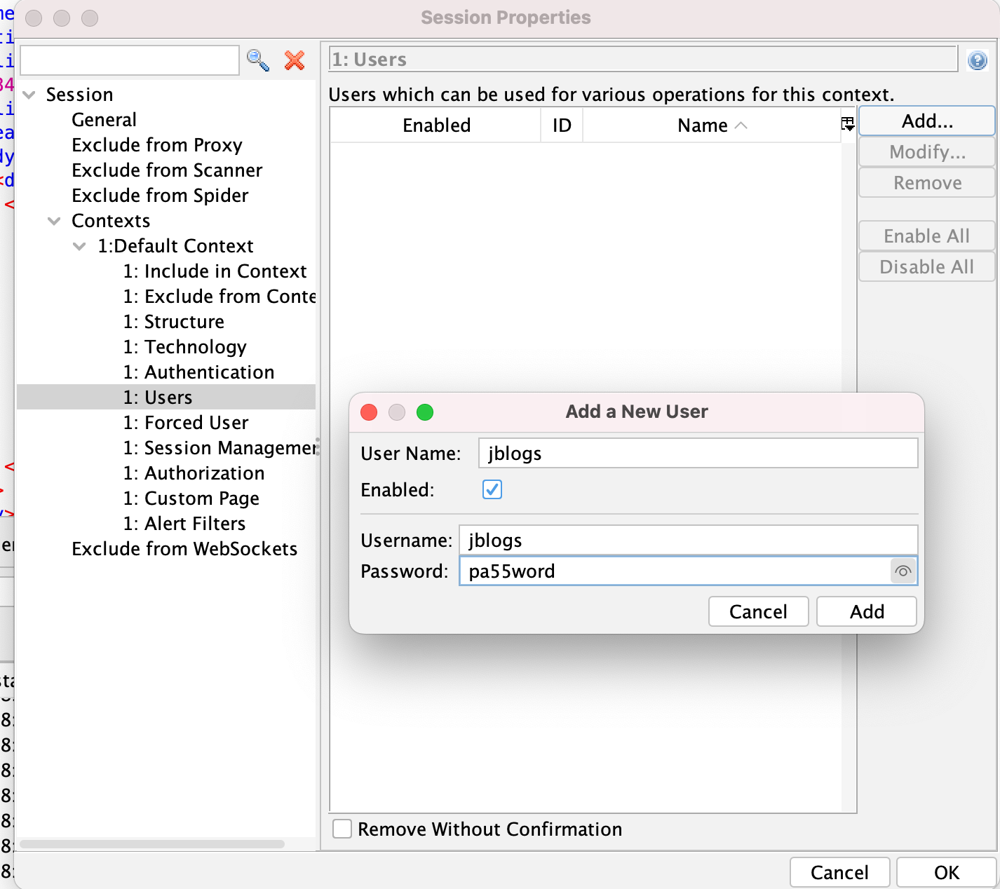
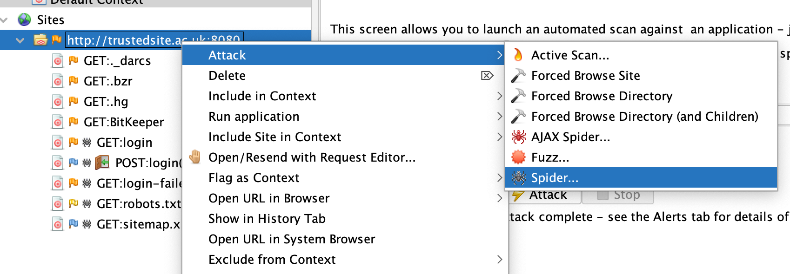
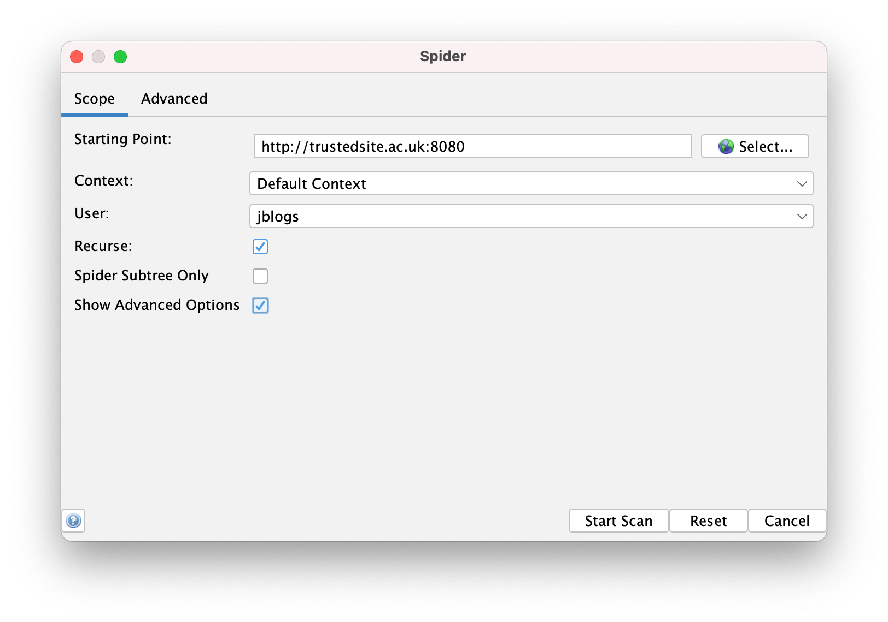
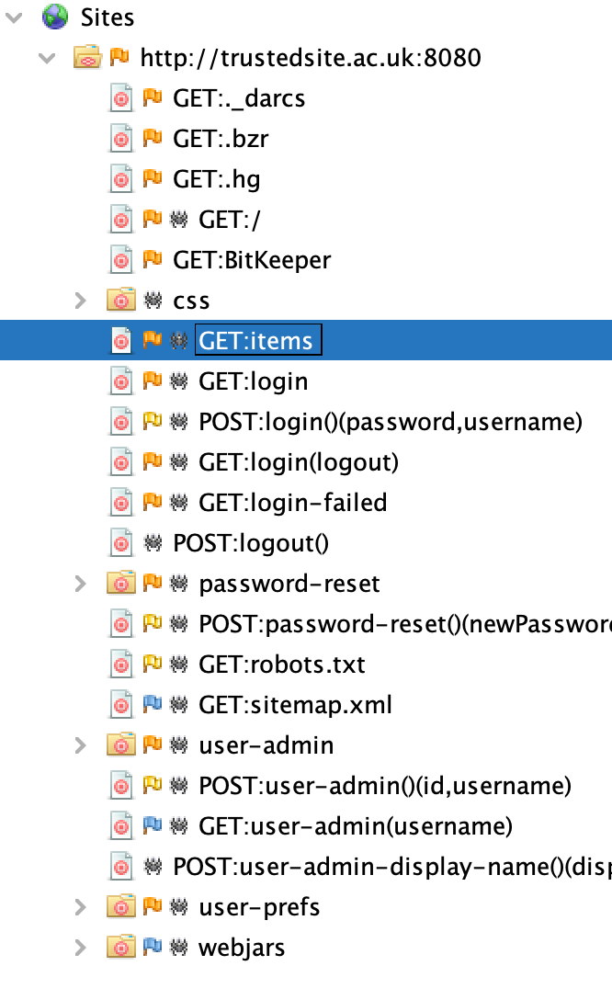

Zed Attack Proxy (ZAP) is a free, open-source penetration testing tool being maintained under the umbrella of the Open Web Application Security Project (OWASP). ZAP is a manipulator-in-the-middle proxy.
java -jar vulnerable-webapp-1.5.0.jarjblogs and the default password is pa55word.
http://trustedsite.ac.uk:8080/ or http://localhost:8080/ .Attack.

http://trustedsite.ac.uk:8080/ or http://localhost:8080/http://trustedsite.ac.uk:8080/ or http://localhost:8080/

username and password respectively.\QWelcome to The Website\E
\QYou have been signed out\E


jblogs.

